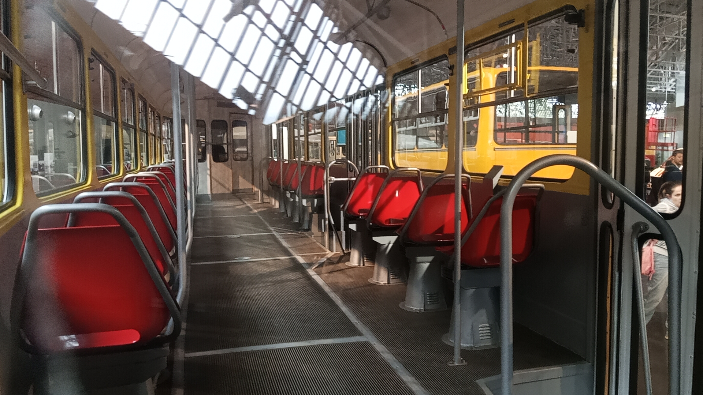
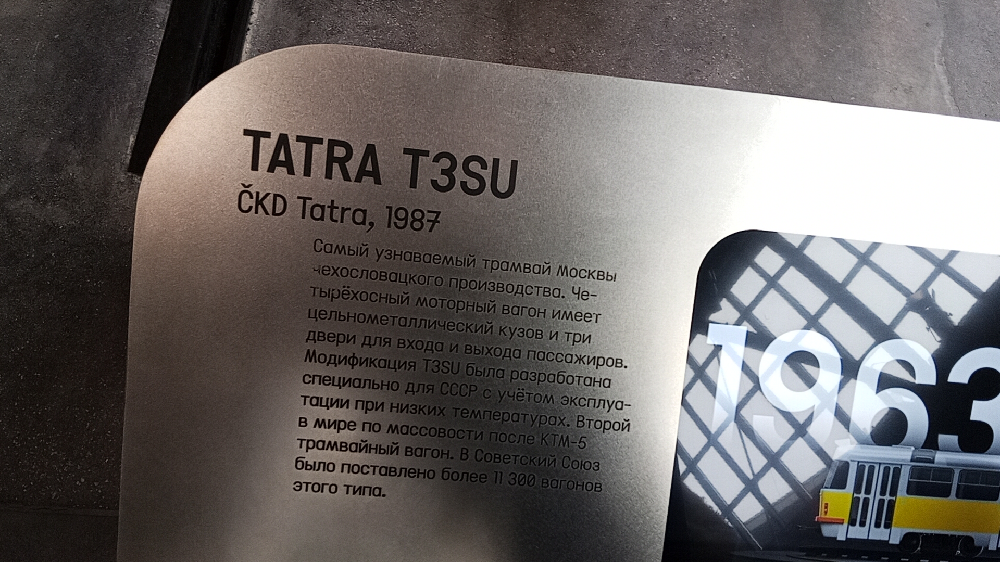

Tatra T3SU
Tatra T3SU — чехословацкий высокопольный четырёхосный моторный трамвайный вагон, специальная модификация для Советского Союза. Выпускался на заводе ČKD Tatra в Праге.
Данный экземпляр (№5993) был построен в июле 1987 года. Это самый узнаваемый трамвай Москвы чехословацкого производства, который имеет цельнометаллический кузов и три двери для входа и выхода пассажиров. Сейчас он является частью коллекции Музея Транспорта Москвы.
Общая информация об экспонате
🏭 Производство
Завод-изготовитель: ČKD Tatra, Прага (Чехословакия)
Модель: Tatra T3SU
Построен: 07.1987
Заводской №: 176598
📍 Музейный статус
Местонахождение: Музей Транспорта Москвы
Состояние: Не эксплуатируется (музейный экспонат)
Назначение: Историческая экспозиция
Передан в музей: 15.04.2026
Интерьер
Первоначальная компоновка салона 2+1 (полумягкие сиденья ЧКД).
⭐ Рекордсмен: T3SU стал крупнейшей в мире серией трамвайных вагонов, проданных в одну страну. Модификация SU была специально разработана для СССР с учётом эксплуатации при низких температурах.
История работы и реставрации
Эксплуатация в депо
Вагон поступил в Октябрьское трамвайное депо. Работал под номерами 4860, затем 4993.
Депо имени Н.Э. Баумана
Был переведён в Трамвайное депо имени Н.Э. Баумана. С 2001 по 2009 год работал под номерами 2993, 0226, 2993 и, наконец, 0232.
Капитальные ремонты
Проходил капитальные ремонты на ТРЗ. В 2007 году при ремонте был оборудован стажёрской кабиной (место инструктора сзади).
Работа буксиром
Работал буксиром для музейных вагонов. Базировался на музейной площадке на ТРЗ.
Реставрация
Отреставрирован на ТРЗ в качестве исторического вагона № 5993. Была возвращена компоновка салона 1+1 с пластиковыми сиденьями ЧКД, а стажёрская кабина демонтирована.
День Московского транспорта
Принимал участие в параде в честь Дня Московского транспорта.
Передача в коллекцию
Передан в Коллекцию исторических трамваев.
Парад к 123-летию трамвая
Участвовал в параде, посвящённом 123-летию московского трамвая.
Переезд в музей
Перевезён в экспозиционный комплекс Музея транспорта Москвы на Новорязанской улице, 27.
Технические характеристики
Основные параметры
Максимальная скорость: 65 км/ч
Мощность: 4×40 = 160 кВт
Тип двигателя: TE 022 (4 шт.)
Масса: 16 т (снаряжённая)
Длина: 14 000 мм
Конструкция
Кузов: Цельнометаллический, несущий
Двери: 3 (для входа и выхода пассажиров)
Мест для сидения: 23 (3-дверная версия)
Вместимость: 95–110 человек
Токосъём: пантограф, 600 В DC
Фотогалерея

Экспонат 1987 года.

Внутреннее убранство.

Музейная информация.
Нажмите на фото для увеличения
«Трамвай Tatra T3SU — символ целой эпохи в истории транспорта Москвы. В 1970–1980-х годах эти вагоны стали неотъемлемой частью городского ландшафта и добросовестно служили столице несколько десятков лет».